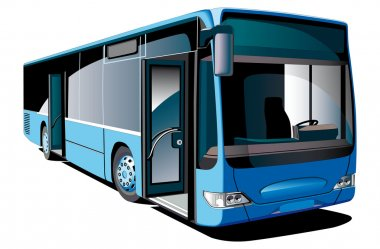

In città
La metro
Con ben 14 linee, la metro constituisce il principale mezzo di spostamento. Il ticket classico costa 1,49€ ma esistono diverse soluzioni di abbonamento.

I bus
Tutte le città dispongono di un servizio di autobus. In Francia costituiscono un servizio puntale e abbastanza affidabile. Ciò nonostante sono pur sempre in balia del traffico stradale, quindi gli imprevisti capitano più spesso che con la metro! Anche qui fate attenzione : il biglietto per il bus è di solito valido anche per Metro, e altri tipo di trasporto.
Bikesharing e monopattini elettrici
. Sono mezzi di trasporto disponibili in quasi tutte le città che dispongono di una soluzione di trasporto dolce, ovvero che non comporti l'uso di combustibili fossili.Il più comune è il bikesharing : consiste in delle bici, elettriche o meno, messe a disposizione in delle stazioni dedicate ad un prezzo generalemente basso (qualche euro al massimo).
A questo, si sono aggiunti i monopattini (trotinette in francese) gestiti in generale da compagnie private. Tra queste ne citiamo alcune : Lime, Bird, Dott, Tier. Queste soluzioni sono di solito più care, ma la qualità è spesso migliore.